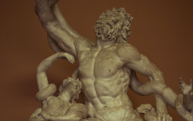
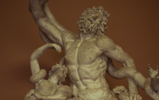

Life in Ancient Greek
Uncover the world of ancient Greece through the sculptures, tools, and jewelry found in ruins from over 2000 years ago that have been unearthed through modern science and technology.
Uncover the world of ancient Greece through the sculptures, tools, and jewelry found in ruins from over 2000 years ago that have been unearthed through modern science and technology.
